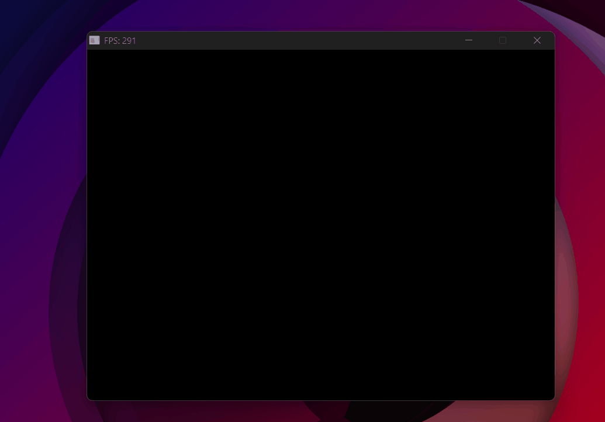

Culling & Optimizations
Skipping work the camera can't see — and parallelizing what remains.
The problem
With a model loaded and textured, the next bottleneck is obvious: the rasterizer processes triangles the user will never see. Triangles facing away from the camera, triangles outside the field of view, and pixels computed one at a time on a single CPU core. Three optimizations fix most of this.
Backface culling
Any closed solid object has two kinds of triangles: those facing toward the camera (frontfaces) and those facing away (backfaces). Backfaces are always hidden behind the frontfaces of the same object — they can never be visible. Discarding them before rasterizing cuts roughly half the work.
The way to detect them comes directly from the edge function. When we compute the edge function for a triangle's three vertices in screen space, the sign of the result tells us the winding order — the direction in which the vertices are laid out. Counter-clockwise means the triangle faces toward the camera. Clockwise means it faces away.
In the rasterizer, we already use the edge function to compute barycentric coordinates. The total area it produces has a sign:
- Negative area → counter-clockwise → frontface → render
- Positive area → clockwise → backface → discard
// Signed area of the triangle in screen space
float area = edge_function(real2 - real1, real3 - real1);
if (area >= 0) continue; // clockwise = backface — skip
Frustum culling
Even with backface culling, many triangles fall outside the camera's field of view. Rasterizing them is pure wasted work.
The test happens in clip space — before the perspective divide. Recall from the projection matrix section: after multiplying by the MVP, each vertex has a w component equal to its original depth. A vertex is inside the frustum if its x, y, and z are all between −w and +w. If all three vertices of a triangle exceed that range on the same side, the whole triangle is off-screen:
// All three vertices beyond the same frustum plane → discard
if (v1.x < -v1.w && v2.x < -v2.w && v3.x < -v3.w) continue; // left
if (v1.x > v1.w && v2.x > v2.w && v3.x > v3.w) continue; // right
if (v1.y < -v1.w && v2.y < -v2.w && v3.y < -v3.w) continue; // bottom
if (v1.y > v1.w && v2.y > v2.w && v3.y > v3.w) continue; // top
Why ±w? Because after the perspective divide, NDC x = x_clip / w. For a point to be inside the screen, NDC x must be in [−1, 1], which means x_clip / w ∈ [−1, 1], which means −w ≤ x_clip ≤ w. Checking this in clip space avoids the division entirely.
Note: the same test applies to Z — clipping triangles that are entirely behind the near plane or beyond the far plane. This wasn't implemented here since none of the test scenes involved objects at extreme depth ranges, but it follows the exact same logic as the X/Y checks above.
Multithreading
Backface and frustum culling reduce the number of triangles to process. But the rasterization of the remaining triangles is still sequential — one pixel at a time, on a single CPU core.
Modern CPUs have multiple cores — independent processing units that can execute code simultaneously. Instead of using just one, we can split the work across all of them. The solution: divide the framebuffer into horizontal strips and assign each strip to a different thread. Each thread rasterizes its own rows in parallel, independently, without interfering with the others.
Step 1 — Divide the framebuffer into strips. Before launching any threads, we precompute the row range each thread will own. Each strip covers rows_per_thread rows, and the last one absorbs any remainder:
unsigned int num_cores = std::thread::hardware_concurrency();
int lines_per_thread = HEIGHT / num_cores;
int remainder = HEIGHT % num_cores;
for (int i = 0; i < num_cores; i++) {
threads.push_back({ i * lines_per_thread,
(i + 1) * lines_per_thread - 1 });
}
threads.back().y += remainder; // last strip absorbs leftover rows
Each entry in threads is a {x, y} pair — the first and last row of that thread's strip.
Step 2 — Spawn and join. Each thread calls Rasterize_threads with its own row range (t.x → start row, t.y → end row). The rasterizer only writes pixels within those rows, so threads never touch each other's memory.
for (auto& t : threads) {
threads_list.push_back(
std::thread(&Render::Rasterize_threads, this,
std::ref(triangulos), t.x, t.y)
);
}
for (auto& t : threads_list) {
t.join(); // wait for all threads before presenting the frame
}
Here are all the optimizations paying off — the Jeep at ~300 FPS stable:

From nearly unusable with complex models to ~300 FPS — backface culling, frustum culling, and multithreading combined.
Result
With these three optimizations chained together, the rasterizer goes from struggling with complex models to running at hundreds of FPS. The next step is giving the camera free movement — WASD and mouse look.